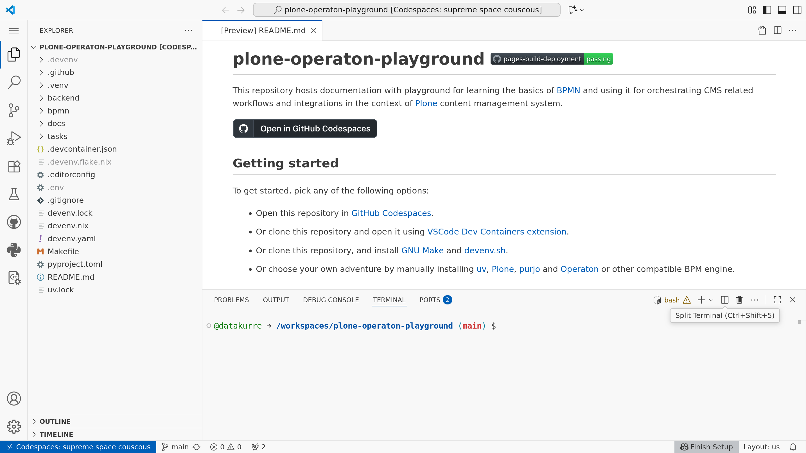
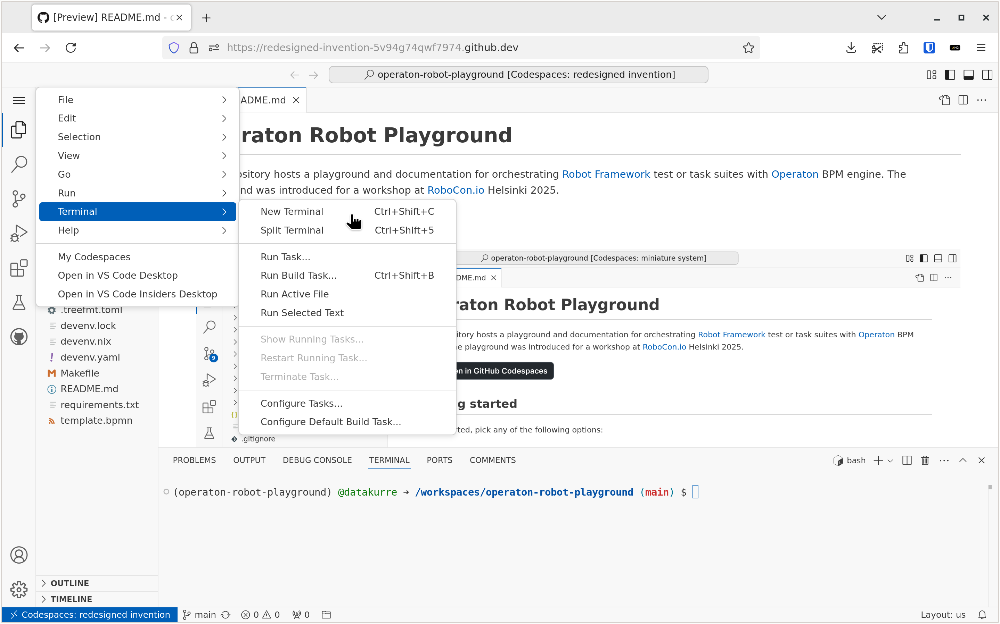
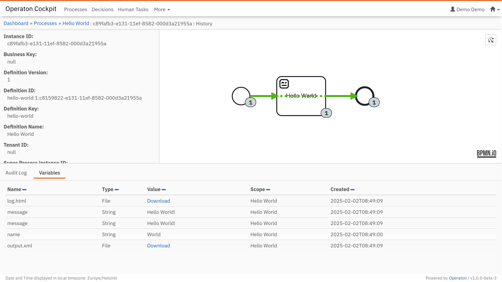
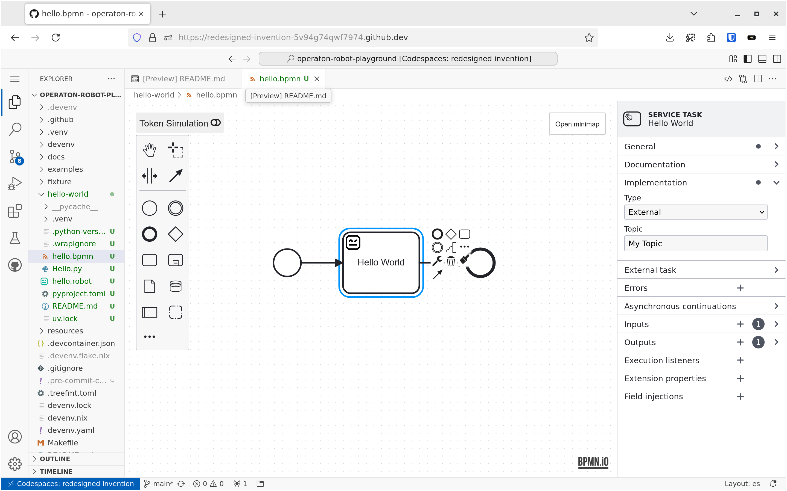
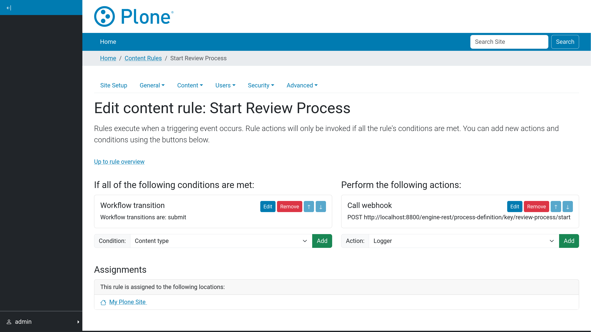
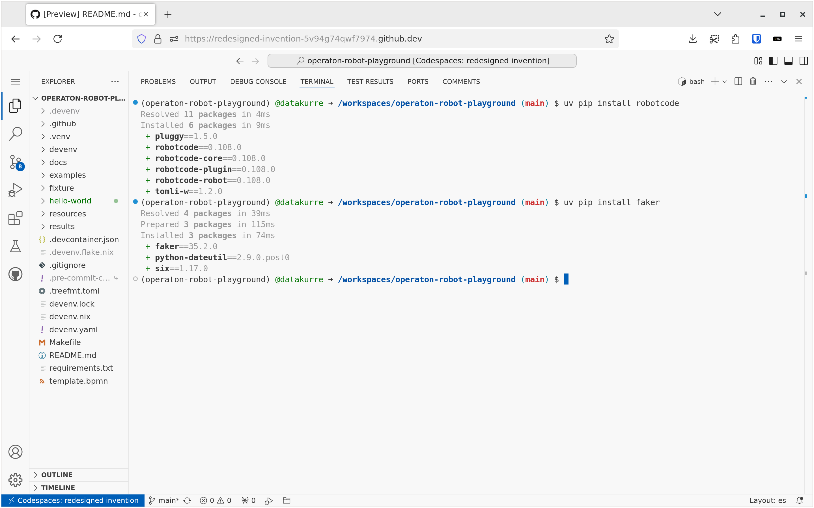
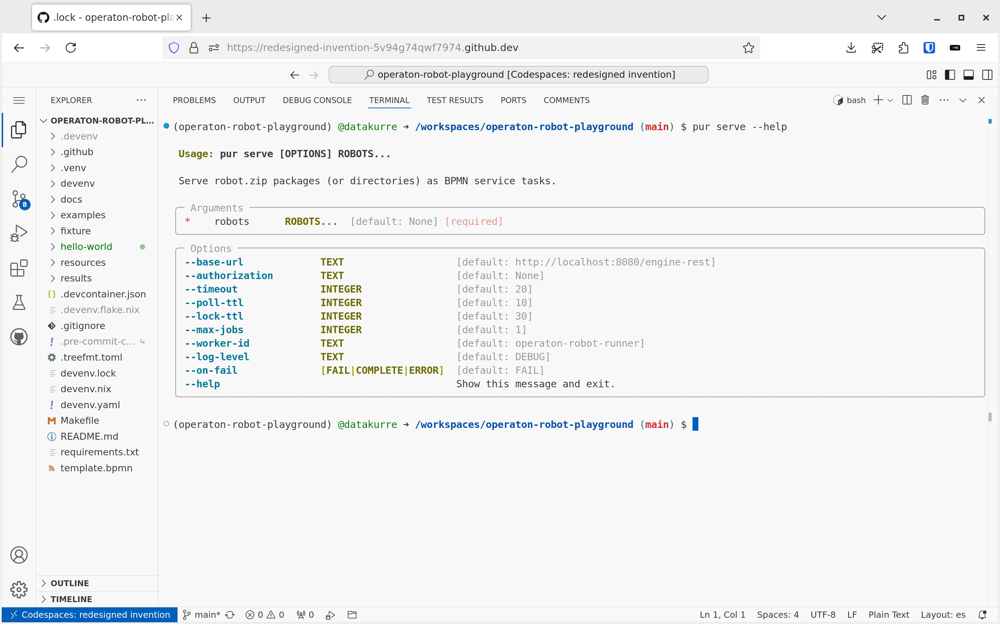
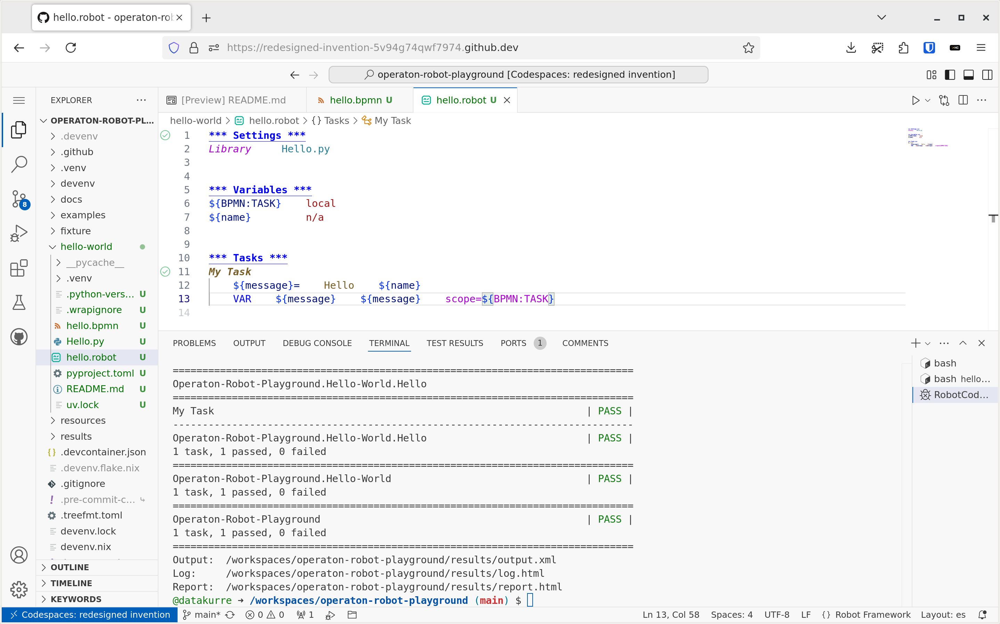
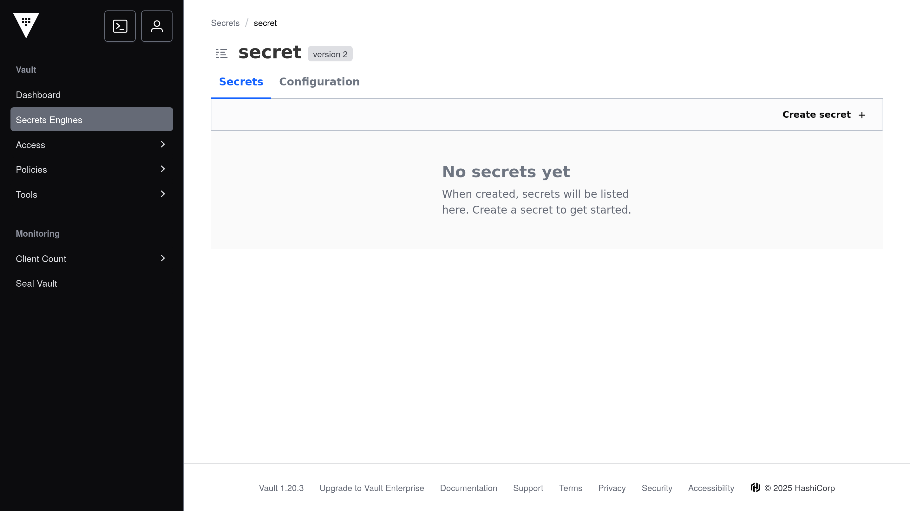

Plone Operaton Playground#
Plone Operaton Playground is a VSCode Dev Container based development environment that supports GitHub Codespaces. It can also be run locally with the VSCode extension. For adventurers, the README also mentions more manual setups.
Technically, the playground is just a git repository containing both this documentation and the development environment configuration. There are many files, but don’t be afraid of them.

Terminal#
Using the playground requires substantial use of the terminal because the main tools used, uv and pur(jo), are all command-line tools. In addition, the playground includes robot to support Robot Framework based task automation.
A new terminal can be launched using the shortcut Ctrl+Shift+C or Cmd+Shift+C. Alternatively, it can be found from the menu Terminal > New Terminal. Or with editor command > Terminal: Create New Terminal.

If the terminal does not start with the default Python virtual environment (plone-operaton-playground) activated, it should be activated by typing the command make shell into each new terminal.
Operaton#
BPMN-driven orchestration requires a BPM engine capable of executing BPMN models. The playground provides a preconfigured Operaton BPM engine, which is a Java-based open-source BPM engine, forked from the popular Camunda 7 CE.
The current version is 1.0.0-beta5 with JSON support (“SPIN”) and the currently required UI plugin for displaying process instance histories.

Operaton is started from the terminal in the background with the command make start. Once started, the editor will prompt you to open the Operaton UI in a new browser tab. The playground username is admin and the password is admin.
If you need to see the console output of Operaton, you can attach to its monitor with make start-monitor.
The raw devenv command to start Operaton and attach the monitor all at once in the same terminal is devenv up.
Miranum Modeler#
For creating and editing BPMN 2.0 and DMN diagrams for Operaton, the playground provides fork of the Miranum Modeler extension preinstalled. Any .bpmn, .dmn or .form file opened will be automatically opened in the modeler.
Miranum Modeler is based on free, source-available BPMN.io libraries, whose license requires the BPMN.io logo to be displayed in the bottom right corner of the modeler.

The extension is missing a command for creating new diagrams, but you can create new files in the terminal with the command pur bpm create and then open them in the modeler.
Plone#
The playground also comes with Plone. To run better in Codespaces, the playground uses Plone Classic. The example site is available similarly to Operaton after make start through the Codespaces exposed ports feature.

The example site comes configured with collective.webhook to support interacting with Operaton processes via Operaton REST API (or Camunda 7 CE REST API).
The playground username for Plone admin use is admin and the password is admin.
uv#
uv is an extremely fast Python package and project manager, written in Rust. It is a single tool that replaces most of the existing Python packaging and virtual environment tools.

The default Python virtual environment in the playground is managed with uv. New packages can be installed into it using the command uv pip install. Later, uv is also used for managing custom Robot Framework test/task suite package dependencies with its uv add command, and for executing them with the pur(jo) tool.
If uv is not available in the terminal, it should become available with the command make shell in the terminal.
pur(jo)#
pur(jo) is a work-in-progress tool for managing and executing Python and Robot Framework test / task suite packages for BPMN-driven orchestration.

We’ll cover more about pur(jo) in another section of this documentation.
RobotCode#
Another extension preinstalled in the playground is RobotCode. It is a popular extension adding Robot Framework IntelliSense, linting, test execution and debugging, code formatting, refactoring, and many more features right into the editor.
RobotCode features are available in any .robot file opened in the editor.

RobotCode requires a Python virtualenv with the robotframework package preinstalled. The playground provides one right at .venv to support the autodiscovery in the editor. If the virtualenv is missing for some reason, try make shell in the terminal to recreate it.
Vault#
Sooner than later, integrating task automation with external services requires some secrets management. For demonstration purposes, make start also starts Hashicorp Vault with a single key-value secrets mount.

Vault root token can be exposed using terminal, with
cat .devenv/state/env_file